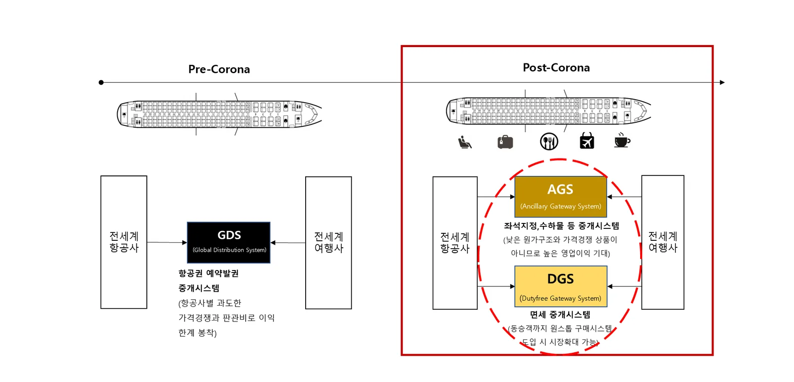

한 문장으로 말하면
올윈에어는 부가서비스를 팔고 싶은 곳(공급처)과 부가서비스를 팔 수 있는 곳(판매처)을 한 번의 연동으로 이어 주고, 그 사이의 모든 운영을 책임지는 회사입니다.
공급처
- 항공사 (좌석·수하물·기내식·빠른짐찾기·골프팩)
- 여행 부가서비스 공급사 (eSIM, 픽업, 공항 서비스, 면세 등)
올윈에어 AGS
- 항공사·NDC API 연동과 표준 변환
- 판매처별 노출·가격 관리
- 구매 화면 제공, 통합 결제
- 고객 CS, 정산, 유지보수
- AI 좌석추천 (PNR 기반)
판매처
- 여행사·OTA
- 항공사 자사 채널
- 여행·커머스·결제 플랫폼
→ 고객은 판매처의 화면 안에서 항공권과 부가서비스를 한 번에 구매합니다.
핵심 숫자
70~90%여행사가 판매하는 항공권 비중 (항공사 유형별)
1,095억 달러세계 항공 부가서비스 시장 (2019년, IdeaWorks)
7개 항공사현재 연동 중인 국내 항공사
13개 여행사현재 제휴 중인 여행사·OTA

사업모델을 6가지로 나눠 보면
자주 묻는 질문
- 올윈에어의 사업모델은 무엇인가요?
- 항공사·부가서비스 공급처와 여행사·OTA 판매처를 한 번의 연동으로 연결하는 B2B 부가서비스 게이트웨이(AGS)입니다. 연동, 판매 화면, 결제, CS, 정산, 유지보수를 올윈에어가 책임지고, 판매가 일어나면 공급처와 판매처 모두 수익을 얻습니다.
- 올윈에어는 소비자에게 직접 판매하나요?
- 아니요. 올윈에어는 B2B 기업으로, 제휴 판매처의 예약 화면 안에서 고객에게 부가서비스를 제공합니다.
- 어떤 회사가 올윈에어와 제휴하면 좋나요?
- 부가서비스 판매 채널을 넓히고 싶은 항공사·부가서비스 공급사, 그리고 항공권 외 추가 수익을 만들고 싶은 여행사·OTA·여행 플랫폼입니다.
올윈에어와 연동을 시작하세요
항공사·부가서비스 공급사, 여행사·OTA·여행 플랫폼 모두 한 번의 연동으로 시작할 수 있습니다. 연동 방식과 일정은 제휴사 환경에 맞춰 협의합니다.
제휴 이메일partnership@allwin.co.kr
대표 연락처 (평일 09:00~18:00)1522-2284